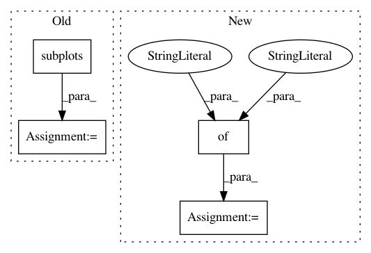

7c39ec18617738b2038662c0a94b0a250435a379,examples/kdeplot.py,,,#,10
Before Change
trace = az.utils.load_trace("data/non_centered_eight_trace.gzip")
fig, ax = plt.subplots(figsize=(12, 8))
az.kdeplot(trace.tau, fill_alpha=0.1, ax=ax)
After Change
az.style.use("arviz-darkgrid")
ax = az.kdeplot(np.random.gumbel(size=100), label="100 gumbel samples", rug=True,
plot_kwargs={"linewidth": 5, "color": "black"},
rug_kwargs={"color": "black"})
In pattern: SUPERPATTERN
Frequency: 3
Non-data size: 4
Instances
Project Name: arviz-devs/arviz
Commit Name: 7c39ec18617738b2038662c0a94b0a250435a379
Time: 2018-07-11
Author: ColCarroll@users.noreply.github.com
File Name: examples/kdeplot.py
Class Name:
Method Name:
Project Name: matplotlib/matplotlib
Commit Name: 2fff9ca2edbb2db24ef28c9c591d5ba6b0e1e45a
Time: 2020-06-07
Author: 2836374+timhoffm@users.noreply.github.com
File Name: examples/lines_bars_and_markers/stackplot_demo.py
Class Name:
Method Name:
Project Name: scikit-learn-contrib/imbalanced-learn
Commit Name: 153f6e0ff5729fc22b68d5f6e0fd05edf96d8c2c
Time: 2019-11-17
Author: g.lemaitre58@gmail.com
File Name: examples/datasets/plot_make_imbalance.py
Class Name:
Method Name: